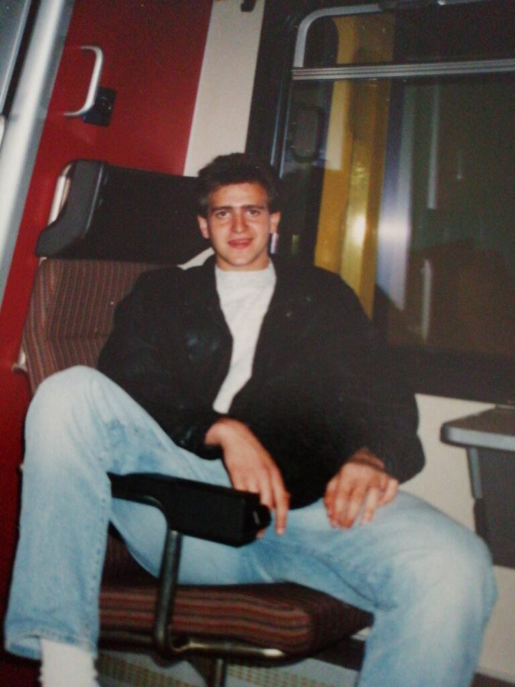
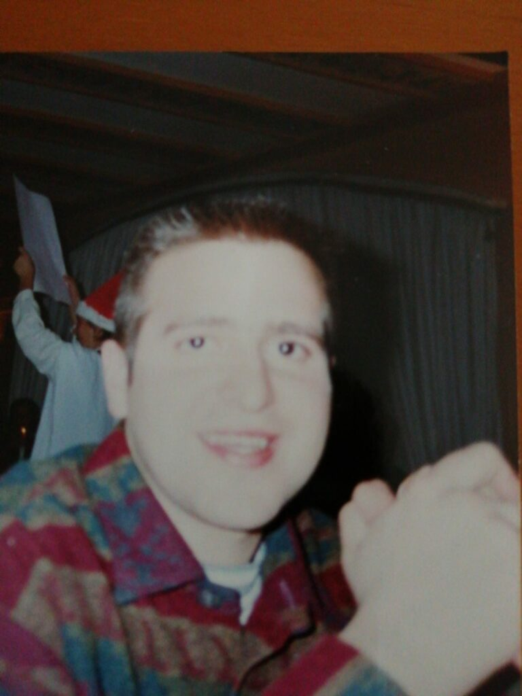
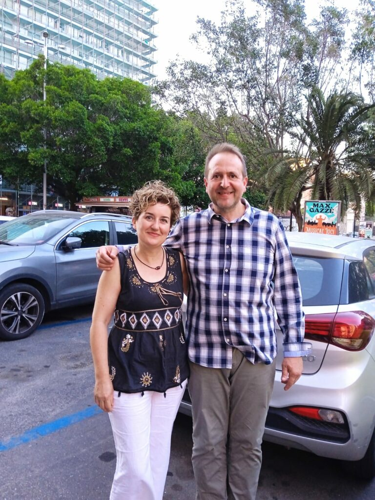

Parte 1: Le Origini e le Sfide

Mi chiamo Michel e dopo una lunga battaglia piena di ostacoli e momenti difficili, sono arrivato a un punto nella mia vita in cui sento l’urgenza di raccontarti la mia avventura. Sono nato in Svizzera nel 1970 da genitori immigrati.
Fin da bambino ho sentito un’irrequietezza che mi ha reso un individuo problematico. I miei genitori mi affidavano alle cure di mia zia materna durante la settimana. Ricordo ancora vivamente le lacrime che versavo quando i miei genitori venivano a prendermi il venerdì; desideravo solo la dolcezza e l’amore della mia cara zia.
L’inizio della scuola è stata una prova durissima. Subivo atti di bullismo e mi sentivo costantemente timido ed inquieto. Fu in quel periodo che iniziai ad avvicinarmi alle droghe, influenzato dai nuovi movimenti musicali come il soul e l’hip hop. Fumare spinelli era considerato normale, e presto passai all'ecstasy per ballare tutta la notte. Un senso di oppressione e di inutilità cominciava a farsi sempre più forte.
Parte 2: La Caduta e la Fuga

L’incontro con un ragazzo figlio di amici dei miei genitori ha sconvolto interi anni della mia vita. Iniziai a spacciare droga per un gruppo straniero per poter sostenere la mia dipendenza. Vivevo parzialmente per strada, senza una fissa dimora.
Tuttavia, un giorno ebbi un problema economico con i fornitori e dovetti fuggire per evitare di essere ucciso. Approfittai della proposta di mio padre di andare in Italia, a Udine.
Chiesi a mio padre di lasciarmi a casa per superare l’astinenza da solo. Era giugno del 1994. Dopo tre mesi ricevetti la lettera di leva e iniziai il servizio militare. Nel 1997 conobbi la mia ex moglie e ci sposammo nel 2003. Ricercavo in una persona la motivazione per il mio cambiamento interiore.
Parte 3: Il Fallimento e l'Incontro con la Fede
Il matrimonio era in via di disfacimento a causa della mia incapacità di aprirmi sul mio passato. Mi separai e, scappando di nuovo, mi diressi in Slovenia. Erano passati quasi 12 anni dall’ultima volta che mi ero drogato.
Ebbi un'overdose e mi risvegliai la sera successiva. Il Signore mi ha preservato da una morte certa. Tornai a frequentare il SERT e caddi in una profonda depressione. Il 12 settembre del 2006, disperato e in lacrime davanti al mio consulente, mi venne fatta una domanda: "Michel, vuoi andare in una comunità?"
Parte 4: La Rinascita in Comunità
Entrai in una comunità cristiana di recupero. Durante l'astinenza, durissima, dormivo solo un'ora a notte. Ma iniziai a partecipare alle riunioni mattutine e a pregare.
Avevo sempre “un’ombra” al mio fianco, un ragazzo che aveva già superato le sue dipendenze e mi aiutava nel mio percorso. Iniziai ad acquisire un linguaggio corretto e a rinnovare il mio rapporto con Dio. Sono rimasto 15 anni in quella comunità, collaborando in tante diverse maniere.
EPILOGO: Catania e Aiuto dall'alto

Dopo 15 anni in comunità, mi sono ritrovato a Catania. Conoscendo la mia storia, alcuni mi hanno incoraggiato a iniziare a essere attivo in strada verso chi si trova in evidente difficoltà.
Poi ho incontrato Lidia, la responsabile dell’associazione “Aiuto dall’Alto odv”. Mi ha chiesto di unirmi a loro e ho accettato con entusiasmo. Lidia valorizza la mia esperienza: essendo stato io una persona di strada, ho un bagaglio che l'associazione riconosce e valorizza.
Oggi sono Socio e co-responsabile dei progetti di Aiuto dall'alto. Rimango a disposizione per aiutarti nelle uscite di volontariato di strada!